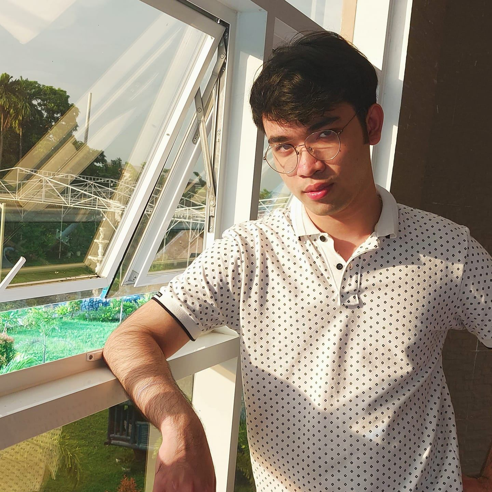

Projects
Terminal-based Sokoban
Java Ship Shooting Game
Programming Languages
Problem Solving
Continuous Learning
Data Structures and Algorithms
Auto-Biography
I am Biarritz Alain S. Evangelista, born in Baliuag, Bulacan, Philippines. My life has been enriched by my passion for anime, video games, and films. Through my love for gaming, I've learned a valuable lesson that transcends virtual worlds: true skills are earned through dedication and hard work, not bought. It's a reminder that life's most rewarding achievements are the result of genuine passion and perseverance.
Pearl Shire Residence, Los Banos, Laguna; 0912-345-6789
All materials, content, and resources provided on this website are intended for educational purposes only.